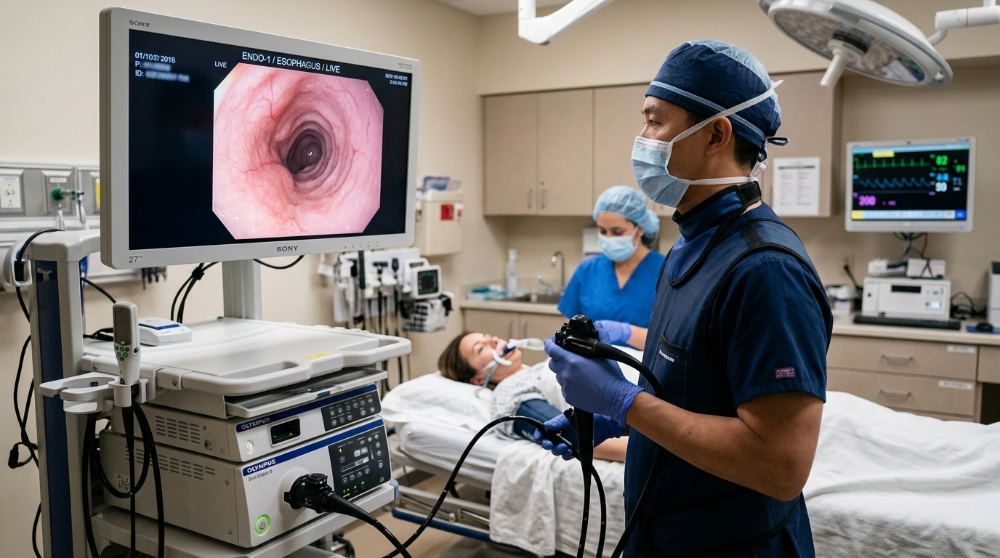
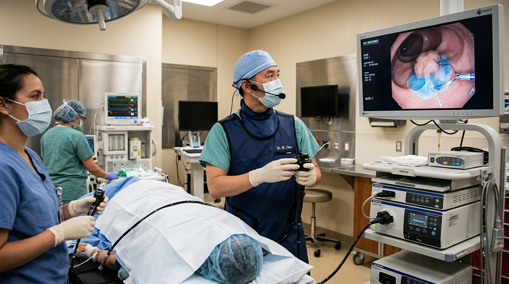
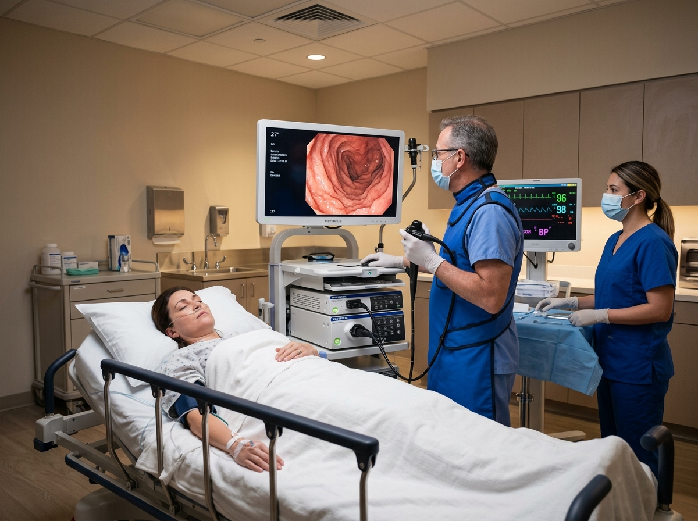
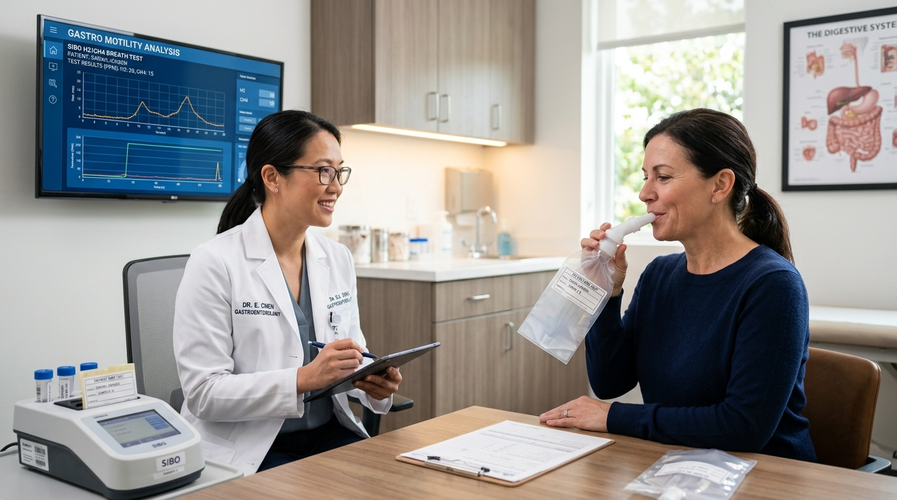

ADVANCED ENDOSCOPY & INTERVENTIONAL GI SPECIALTY CENTER.
An accredited surgical and diagnostic institute uniting artificial intelligence mucosal scanning, certified propofol conscious sedation, and zero-cramp CO2 insufflation. Dedicated to same-week direct-access procedures and complex lesion eradication.
99.8%
Adenoma Detection Rate45 Mins
Average Outpatient Stay0 Days
Urgent GI Referral Wait
INTERVENTIONAL DISCIPLINES & CLINICAL SUITES.
Our center is purpose-engineered for high-precision diagnostic and therapeutic gastrointestinal procedures that replace invasive inpatient surgery.

High-Definition Upper Endoscopy (EGD) & Barrett's Clearance
Sub-millimeter optical scrutiny of esophageal and gastric mucosa utilizing Olympus TXI technology. Enables early detection and outpatient ablation of Barrett's dysplasia without open surgical resection.

Therapeutic Colonoscopy & Complex Polypectomy (EMR)
Achieving a documented 99.8% Adenoma Detection Rate—nearly 4x the national clinical benchmark. Large, flat, and sessile serrated adenomas are safely resected in our outpatient suites, sparing patients from segmental bowel surgery.

Esophageal Motility & Bravo™ Wireless pH Telemetry
Say goodbye to uncomfortable trans-nasal catheters. Our miniature wireless capsule temporarily adheres to the esophageal wall during gentle endoscopy, transmitting acid exposure metrics to a pocket pager while you eat and sleep normally.

Non-Invasive Hepatobiliary Triage & Rapid Biomarkers
Zero incisions, zero radiation. Non-invasive ultrasound shear wave elastography precisely quantifies liver fibrosis and hepatic steatosis in 10 minutes, alongside Quintron multi-gas breath analytics for small intestinal bacterial overgrowth.
WHY AN AMBULATORY SPECIALTY CENTER BEATS A HOSPITAL.
A dedicated outpatient interventional institute delivers superior safety metrics, personalized nursing ratios, and an anxiety-free environment.
Stuck in multi-tiered hospital bureaucratic queues.
Direct-access fast-track scheduling.
Causes severe post-procedural cramping & distension.
Absorbed 150x faster; virtually zero discomfort.
Lingering dizziness, nausea, and 3+ hour grogginess.
Instant gentle awakening; clear-headed in 10 minutes.
Standard white-light resolution scopes.
Olympus EVIS X1 4K HDR + real-time CADe scanning.
Unforeseen separate bills for recovery, facility & supplies.
All-inclusive published bundles & in-network parity.
DIRECT-ACCESS ENDOSCOPY PATHWAY.
Healthy screening patients can skip the preliminary office consultation and co-pay, going directly from digital triage to procedure day.
Digital Health Triage
Complete our confidential 5-minute health history questionnaire online. Our clinical team reviews medications and confirms procedure eligibility within 4 hours.
100% OnlineGentle Prep Kit Shipped
Receive your personalized low-volume split-dose bowel prep kit directly to your doorstep with clear, color-coded step-by-step instructions and nursing SMS check-ins.
Low-Volume FormulaPrivate Day Suite
Arrive at our calm center. Settle into a private recovery pod with heated blankets, certified anesthesia propofol administration, and high-definition scope imaging.
Total ComfortDigital Photo Debrief
Before you leave, your specialist provides an immediate bedside photo briefing of your findings. High-res images and preliminary reports sync instantly to your portal.
Same-Day ResultsPROCEDURE PRICING & INSURANCE ESTIMATOR.
Select your procedure and coverage type to view clear, transparent out-of-pocket estimates.
Typical Copay with In-Network Commercial Insurance (100% Preventative Coverage)
ENGINEERED FOR PATIENT TRANQUILITY & OPTICAL CLARITY.
Every piece of endoscopic hardware in our suites is curated to minimize discomfort while maximizing early neoplastic detection.
Olympus EVIS X1 4K
Featuring Texture and Color Enhancement Imaging (TXI) and Red Dichromatic Imaging (RDI) for instant visualization of hidden mucosal pathology.
AI-Powered CADe Scan
Deep learning artificial intelligence algorithm runs concurrently with endoscopy video feed to highlight polyps in real time, yielding a 99.8% ADR.
CO2 Warm Insufflator
Medical-grade carbon dioxide eliminates post-colonoscopy bloating because CO2 is absorbed through bowel tissue 150 times faster than room air.
Propofol MAC Anesthesia
Administered by certified nurse anesthetists. Patients experience tranquil, dreamless sleep and wake up clear-headed in 10 minutes with zero nausea.
FOR REFERRING PHYSICIANS & CLINICAL PRACTICES.
We partner closely with primary care providers, internal medicine groups, and urgent care clinics across the Pacific Northwest to guarantee rapid endoscopic triage.
Urgent Referral Hotline
Speak directly with Dr. Maya Carter or our triage coordinator:
📞 (206) 555-0182 Submit Digital Referral FormENDOSCOPY PREPARATION & SAFETY FAQ.
Everything you need to know about preparing for your procedure, conscious sedation safety, and same-day recovery.
TAKE CHARGE OF YOUR GASTROINTESTINAL HEALTH TODAY.
Experience state-of-the-art therapeutic endoscopy, humane sedation, and rapid triage in a tranquil, outpatient environment.